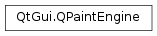

QPaintEngine¶
Synopsis¶
Functions¶
- def
clearDirty(df) - def
hasFeature(feature) - def
isActive() - def
isExtended() - def
paintDevice() - def
painter() - def
setActive(newState) - def
setDirty(df) - def
setSystemClip(baseClip) - def
setSystemRect(rect) - def
syncState() - def
systemClip() - def
systemRect() - def
testDirty(df)
Virtual functions¶
- def
begin(pdev) - def
coordinateOffset() - def
drawEllipse(r) - def
drawEllipse(r) - def
drawImage(r, pm, sr[, flags=Qt.AutoColor]) - def
drawLines(lines, lineCount) - def
drawLines(lines, lineCount) - def
drawPath(path) - def
drawPixmap(r, pm, sr) - def
drawPoints(points, pointCount) - def
drawPoints(points, pointCount) - def
drawPolygon(points, pointCount, mode) - def
drawPolygon(points, pointCount, mode) - def
drawRects(rects, rectCount) - def
drawRects(rects, rectCount) - def
drawTextItem(p, textItem) - def
drawTiledPixmap(r, pixmap, s) - def
end() - def
type() - def
updateState(state)
Detailed Description¶
The
PySide2.QtGui.QPaintEngineclass provides an abstract definition of howPySide2.QtGui.QPainterdraws to a given device on a given platform.Qt provides several premade implementations of
PySide2.QtGui.QPaintEnginefor the different painter backends we support. The primary paint engine provided is the raster paint engine, which contains a software rasterizer which supports the full feature set on all supported platforms. This is the default for painting onPySide2.QtWidgets.QWidget-based classes in e.g. on Windows, X11 and macOS , it is the backend for painting onPySide2.QtGui.QImageand it is used as a fallback for paint engines that do not support a certain capability. In addition we providePySide2.QtGui.QPaintEngineimplementations forOpenGL(accessible throughPySide2.QtOpenGL.QGLWidget) and printing (which allows usingPySide2.QtGui.QPainterto draw on aPySide2.QtPrintSupport.QPrinterobject).If one wants to use
PySide2.QtGui.QPainterto draw to a different backend, one must subclassPySide2.QtGui.QPaintEngineand reimplement all its virtual functions. ThePySide2.QtGui.QPaintEngineimplementation is then made available by subclassingPySide2.QtGui.QPaintDeviceand reimplementing the virtual functionQPaintDevice.paintEngine().
PySide2.QtGui.QPaintEngineis created and owned by thePySide2.QtGui.QPaintDevicethat created it.
-
class
PySide2.QtGui.QPaintEngine([features=QPaintEngine.PaintEngineFeatures()])¶ Parameters: features – PySide2.QtGui.QPaintEngine.PaintEngineFeaturesCreates a paint engine with the featureset specified by
caps.
-
PySide2.QtGui.QPaintEngine.PaintEngineFeature¶ This enum is used to describe the features or capabilities that the paint engine has. If a feature is not supported by the engine,
PySide2.QtGui.QPainterwill do a best effort to emulate that feature through other means and pass on an alpha blendedPySide2.QtGui.QImageto the engine with the emulated results. Some features cannot be emulated: and .Constant Description QPaintEngine.AlphaBlend The engine can alpha blend primitives. QPaintEngine.Antialiasing The engine can use antialising to improve the appearance of rendered primitives. QPaintEngine.BlendModes The engine supports blending modes. QPaintEngine.BrushStroke The engine supports drawing strokes that contain brushes as fills, not just solid colors (e.g. a dashed gradient line of width 2). QPaintEngine.ConicalGradientFill The engine supports conical gradient fills. QPaintEngine.ConstantOpacity The engine supports the feature provided by QPainter.setOpacity().QPaintEngine.LinearGradientFill The engine supports linear gradient fills. QPaintEngine.MaskedBrush The engine is capable of rendering brushes that has a texture with an alpha channel or a mask. QPaintEngine.ObjectBoundingModeGradients The engine has native support for gradients with coordinate mode QGradient.ObjectBoundingMode. Otherwise, if is supported, object bounding mode gradients are converted to gradients with coordinate modeQGradient.LogicalModeand a brush transform for the coordinate mapping.QPaintEngine.PainterPaths The engine has path support. QPaintEngine.PaintOutsidePaintEvent The engine is capable of painting outside of paint events. QPaintEngine.PatternBrush The engine is capable of rendering brushes with the brush patterns specified in Qt.BrushStyle.QPaintEngine.PatternTransform The engine has support for transforming brush patterns. QPaintEngine.PerspectiveTransform The engine has support for performing perspective transformations on primitives. QPaintEngine.PixmapTransform The engine can transform pixmaps, including rotation and shearing. QPaintEngine.PorterDuff The engine supports Porter-Duff operations QPaintEngine.PrimitiveTransform The engine has support for transforming drawing primitives. QPaintEngine.RadialGradientFill The engine supports radial gradient fills. QPaintEngine.RasterOpModes The engine supports bitwise raster operations. QPaintEngine.AllFeatures All of the above features. This enum value is usually used as a bit mask.
-
PySide2.QtGui.QPaintEngine.DirtyFlag¶ Constant Description QPaintEngine.DirtyPen The pen is dirty and needs to be updated. QPaintEngine.DirtyBrush The brush is dirty and needs to be updated. QPaintEngine.DirtyBrushOrigin The brush origin is dirty and needs to updated. QPaintEngine.DirtyFont The font is dirty and needs to be updated. QPaintEngine.DirtyBackground The background is dirty and needs to be updated. QPaintEngine.DirtyBackgroundMode The background mode is dirty and needs to be updated. QPaintEngine.DirtyTransform The transform is dirty and needs to be updated. QPaintEngine.DirtyClipRegion The clip region is dirty and needs to be updated. QPaintEngine.DirtyClipPath The clip path is dirty and needs to be updated. QPaintEngine.DirtyHints The render hints is dirty and needs to be updated. QPaintEngine.DirtyCompositionMode The composition mode is dirty and needs to be updated. QPaintEngine.DirtyClipEnabled Whether clipping is enabled or not is dirty and needs to be updated. QPaintEngine.DirtyOpacity The constant opacity has changed and needs to be updated as part of the state change in QPaintEngine.updateState().QPaintEngine.AllDirty Convenience enum used internally. These types are used by
PySide2.QtGui.QPainterto trigger lazy updates of the various states in thePySide2.QtGui.QPaintEngineusingQPaintEngine.updateState().A paint engine must update every dirty state.
-
PySide2.QtGui.QPaintEngine.PolygonDrawMode¶ Constant Description QPaintEngine.OddEvenMode The polygon should be drawn using OddEven fill rule. QPaintEngine.WindingMode The polygon should be drawn using Winding fill rule. QPaintEngine.ConvexMode The polygon is a convex polygon and can be drawn using specialized algorithms where available. QPaintEngine.PolylineMode Only the outline of the polygon should be drawn.
-
PySide2.QtGui.QPaintEngine.Type¶ Constant Description QPaintEngine.X11 QPaintEngine.Windows QPaintEngine.MacPrinter QPaintEngine.CoreGraphics macOS ‘s Quartz2D () QPaintEngine.QuickDraw macOS ‘s QPaintEngine.QWindowSystem Qt for Embedded Linux QPaintEngine.PostScript (No longer supported) QPaintEngine.OpenGL QPaintEngine.Picture PySide2.QtGui.QPictureformatQPaintEngine.SVG Scalable Vector Graphics XML format QPaintEngine.Raster QPaintEngine.Direct3D Windows only, based engine QPaintEngine.Pdf Portable Document Format QPaintEngine.OpenVG QPaintEngine.User First user type ID QPaintEngine.MaxUser Last user type ID QPaintEngine.OpenGL2 QPaintEngine.PaintBuffer QPaintEngine.Blitter QPaintEngine.Direct2D Windows only, based engine
-
PySide2.QtGui.QPaintEngine.state¶
-
PySide2.QtGui.QPaintEngine.gccaps¶
-
PySide2.QtGui.QPaintEngine.active¶
-
PySide2.QtGui.QPaintEngine.selfDestruct¶
-
PySide2.QtGui.QPaintEngine.extended¶
-
PySide2.QtGui.QPaintEngine.begin(pdev)¶ Parameters: pdev – PySide2.QtGui.QPaintDeviceReturn type: PySide2.QtCore.boolReimplement this function to initialise your paint engine when painting is to start on the paint device
pdev. Return true if the initialization was successful; otherwise return false.
-
PySide2.QtGui.QPaintEngine.clearDirty(df)¶ Parameters: df – PySide2.QtGui.QPaintEngine.DirtyFlags
-
PySide2.QtGui.QPaintEngine.coordinateOffset()¶ Return type: PySide2.QtCore.QPointReturns the offset from the painters origo to the engines origo. This value is used by
PySide2.QtGui.QPainterfor engines who have internal double buffering.This function only makes sense when the engine is active.
-
PySide2.QtGui.QPaintEngine.drawEllipse(r)¶ Parameters: r – PySide2.QtCore.QRectFReimplement this function to draw the largest ellipse that can be contained within rectangle
rect.The default implementation calls
PySide2.QtGui.QPaintEngine.drawPolygon().
-
PySide2.QtGui.QPaintEngine.drawEllipse(r) Parameters: r – PySide2.QtCore.QRectThe default implementation of this function calls the floating point version of this function
-
PySide2.QtGui.QPaintEngine.drawImage(r, pm, sr[, flags=Qt.AutoColor])¶ Parameters: - r –
PySide2.QtCore.QRectF - pm –
PySide2.QtGui.QImage - sr –
PySide2.QtCore.QRectF - flags –
PySide2.QtCore.Qt.ImageConversionFlags
Reimplement this function to draw the part of the
imagespecified by thesrrectangle in the givenrectangleusing the given conversion flagsflags, to convert it to a pixmap.- r –
-
PySide2.QtGui.QPaintEngine.drawLines(lines, lineCount)¶ Parameters: - lines –
PySide2.QtCore.QLineF - lineCount –
PySide2.QtCore.int
The default implementation splits the list of lines in
linesintolineCountseparate calls toPySide2.QtGui.QPaintEngine.drawPath()orPySide2.QtGui.QPaintEngine.drawPolygon()depending on the feature set of the paint engine.- lines –
-
PySide2.QtGui.QPaintEngine.drawLines(lines, lineCount) Parameters: - lines –
PySide2.QtCore.QLine - lineCount –
PySide2.QtCore.int
This is an overloaded function.
The default implementation converts the first
lineCountlines inlinesto aPySide2.QtCore.QLineFand calls the floating point version of this function.- lines –
-
PySide2.QtGui.QPaintEngine.drawPath(path)¶ Parameters: path – PySide2.QtGui.QPainterPathThe default implementation ignores the
pathand does nothing.
-
PySide2.QtGui.QPaintEngine.drawPixmap(r, pm, sr)¶ Parameters: - r –
PySide2.QtCore.QRectF - pm –
PySide2.QtGui.QPixmap - sr –
PySide2.QtCore.QRectF
Reimplement this function to draw the part of the
pmspecified by thesrrectangle in the givenr.- r –
-
PySide2.QtGui.QPaintEngine.drawPoints(points, pointCount)¶ Parameters: - points –
PySide2.QtCore.QPointF - pointCount –
PySide2.QtCore.int
Draws the first
pointCountpoints in the bufferpoints- points –
-
PySide2.QtGui.QPaintEngine.drawPoints(points, pointCount) Parameters: - points –
PySide2.QtCore.QPoint - pointCount –
PySide2.QtCore.int
Draws the first
pointCountpoints in the bufferpointsThe default implementation converts the first
pointCountQPoints inpointsto QPointFs and calls the floating point version ofPySide2.QtGui.QPaintEngine.drawPoints().- points –
-
PySide2.QtGui.QPaintEngine.drawPolygon(points, pointCount, mode)¶ Parameters: - points –
PySide2.QtCore.QPointF - pointCount –
PySide2.QtCore.int - mode –
PySide2.QtGui.QPaintEngine.PolygonDrawMode
Reimplement this virtual function to draw the polygon defined by the
pointCountfirst points inpoints, using modemode.Note
At least one of the functions must be reimplemented.
- points –
-
PySide2.QtGui.QPaintEngine.drawPolygon(points, pointCount, mode) Parameters: - points –
PySide2.QtCore.QPoint - pointCount –
PySide2.QtCore.int - mode –
PySide2.QtGui.QPaintEngine.PolygonDrawMode
This is an overloaded function.
Reimplement this virtual function to draw the polygon defined by the
pointCountfirst points inpoints, using modemode.Note
At least one of the
PySide2.QtGui.QPaintEngine.drawPolygon()functions must be reimplemented.- points –
-
PySide2.QtGui.QPaintEngine.drawRects(rects, rectCount)¶ Parameters: - rects –
PySide2.QtCore.QRect - rectCount –
PySide2.QtCore.int
This is an overloaded function.
The default implementation converts the first
rectCountrectangles in the bufferrectsto aPySide2.QtCore.QRectFand calls the floating point version of this function.- rects –
-
PySide2.QtGui.QPaintEngine.drawRects(rects, rectCount) Parameters: - rects –
PySide2.QtCore.QRectF - rectCount –
PySide2.QtCore.int
Draws the first
rectCountrectangles in the bufferrects. The default implementation of this function callsPySide2.QtGui.QPaintEngine.drawPath()orPySide2.QtGui.QPaintEngine.drawPolygon()depending on the feature set of the paint engine.- rects –
-
PySide2.QtGui.QPaintEngine.drawTextItem(p, textItem)¶ Parameters: - p –
PySide2.QtCore.QPointF - textItem –
PySide2.QtGui.QTextItem
This function draws the text item
textItemat positionp. The default implementation of this function converts the text to aPySide2.QtGui.QPainterPathand paints the resulting path.- p –
-
PySide2.QtGui.QPaintEngine.drawTiledPixmap(r, pixmap, s)¶ Parameters: - r –
PySide2.QtCore.QRectF - pixmap –
PySide2.QtGui.QPixmap - s –
PySide2.QtCore.QPointF
Reimplement this function to draw the
pixmapin the givenrect, starting at the givenp. The pixmap will be drawn repeatedly until therectis filled.- r –
-
PySide2.QtGui.QPaintEngine.end()¶ Return type: PySide2.QtCore.boolReimplement this function to finish painting on the current paint device. Return true if painting was finished successfully; otherwise return false.
-
PySide2.QtGui.QPaintEngine.hasFeature(feature)¶ Parameters: feature – PySide2.QtGui.QPaintEngine.PaintEngineFeaturesReturn type: PySide2.QtCore.boolReturns
trueif the paint engine supports the specifiedfeature; otherwise returnsfalse.
-
PySide2.QtGui.QPaintEngine.isActive()¶ Return type: PySide2.QtCore.boolReturns
trueif the paint engine is actively drawing; otherwise returnsfalse.
-
PySide2.QtGui.QPaintEngine.isExtended()¶ Return type: PySide2.QtCore.boolReturns
trueif the paint engine is a QPaintEngineEx derivative.
-
PySide2.QtGui.QPaintEngine.paintDevice()¶ Return type: PySide2.QtGui.QPaintDeviceReturns the device that this engine is painting on, if painting is active; otherwise returns 0.
-
PySide2.QtGui.QPaintEngine.painter()¶ Return type: PySide2.QtGui.QPainterReturns the paint engine’s painter.
-
PySide2.QtGui.QPaintEngine.setActive(newState)¶ Parameters: newState – PySide2.QtCore.boolSets the active state of the paint engine to
state.
-
PySide2.QtGui.QPaintEngine.setDirty(df)¶ Parameters: df – PySide2.QtGui.QPaintEngine.DirtyFlags
-
PySide2.QtGui.QPaintEngine.setSystemClip(baseClip)¶ Parameters: baseClip – PySide2.QtGui.QRegionSets the system clip for this engine. The system clip defines the basis area that the engine has to draw in. All clips that are set will be an intersection with the system clip.
Reset the systemclip to no clip by setting an empty region.
-
PySide2.QtGui.QPaintEngine.setSystemRect(rect)¶ Parameters: rect – PySide2.QtCore.QRectSets the target rect for drawing within the backing store. This function should ONLY be used by the backing store.
-
PySide2.QtGui.QPaintEngine.syncState()¶ Updates all dirty states in this engine. This function should ONLY be used when drawing with native handles directly and immediate sync from QPainters state to the native state is required.
-
PySide2.QtGui.QPaintEngine.systemClip()¶ Return type: PySide2.QtGui.QRegionReturns the system clip. The system clip is read only while the painter is active. An empty region indicates that system clip is not in use.
-
PySide2.QtGui.QPaintEngine.systemRect()¶ Return type: PySide2.QtCore.QRectRetrieves the rect for drawing within the backing store. This function should ONLY be used by the backing store.
-
PySide2.QtGui.QPaintEngine.testDirty(df)¶ Parameters: df – PySide2.QtGui.QPaintEngine.DirtyFlagsReturn type: PySide2.QtCore.bool
-
PySide2.QtGui.QPaintEngine.type()¶ Return type: PySide2.QtGui.QPaintEngine.TypeReimplement this function to return the paint engine
QPaintEngine.Type.
-
PySide2.QtGui.QPaintEngine.updateState(state)¶ Parameters: state – PySide2.QtGui.QPaintEngineStateReimplement this function to update the state of a paint engine.
When implemented, this function is responsible for checking the paint engine’s current
stateand update the properties that are changed. Use theQPaintEngineState.state()function to find out which properties that must be updated, then use the correspondingget functionto retrieve the current values for the given properties.See also
© 2018 The Qt Company Ltd. Documentation contributions included herein are the copyrights of their respective owners. The documentation provided herein is licensed under the terms of the GNU Free Documentation License version 1.3 as published by the Free Software Foundation. Qt and respective logos are trademarks of The Qt Company Ltd. in Finland and/or other countries worldwide. All other trademarks are property of their respective owners.